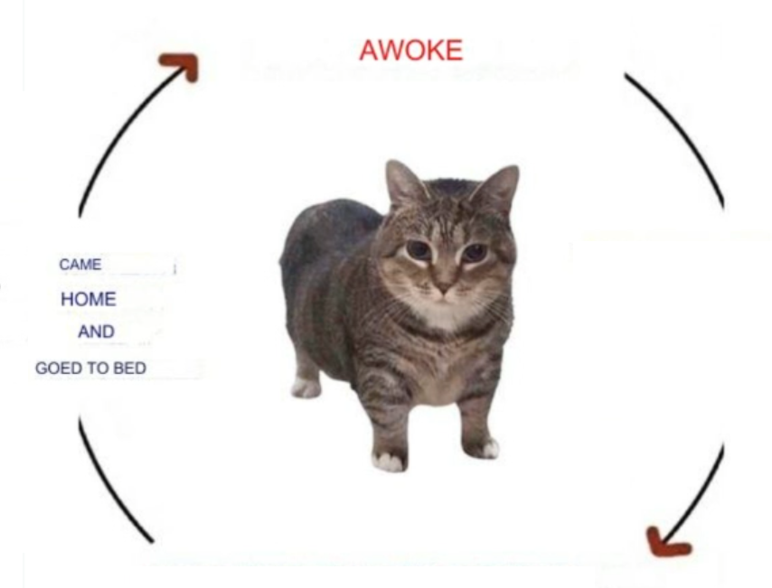
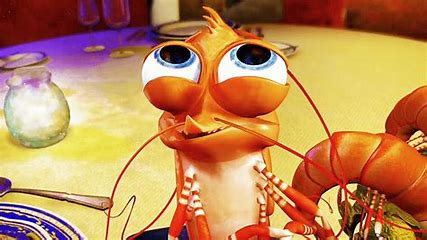

goed to bed

It's true. It's true and the other thing is, my sister had a baby and I took it over because she passed away and then the baby lost it's legs and it's arms and now it's nothing but a stump but I still take care of it with my wife and it's growing and it's fairly happy, but it's difficult 'cause I've been working a second shift at the factory to put food on the table, but all the love I see in that little guy's face makes it worth it in the end. True story.